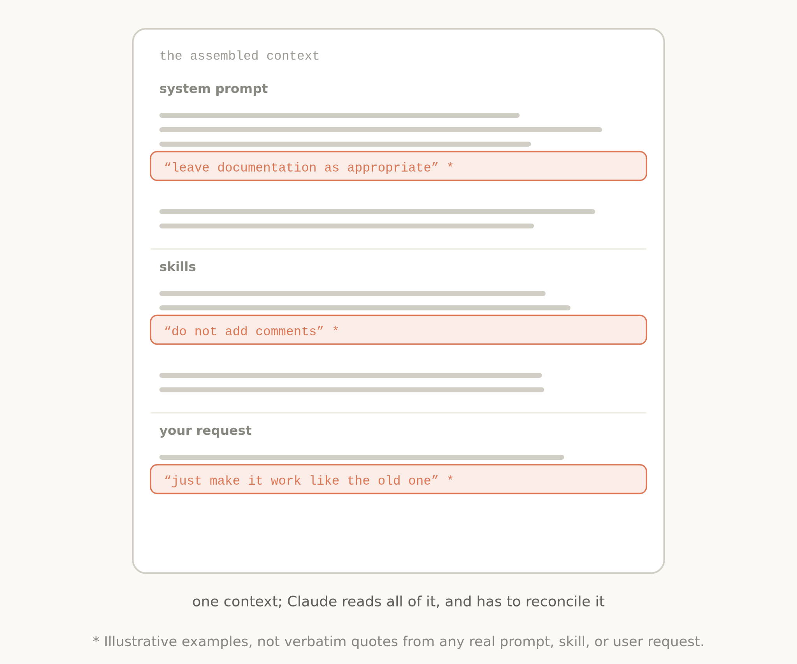

시스템 프롬프트, 스킬, CLAUDE.md, 메모리를 어떻게 조합하느냐 — 이른바 컨텍스트 엔지니어링(context engineering) — 는 Claude가 실제로 얼마나 잘 작동하는지를 크게 좌우한다. Anthropic 팀은 최근 놀라운 사실을 하나 발견했다. Claude Opus 5, Claude Fable 5 같은 신세대 모델을 대상으로 Claude Code의 시스템 프롬프트를 80% 넘게 걷어냈는데도 코딩 평가 성능이 전혀 떨어지지 않은 것이다.
이 발견은 그동안 당연시했던 프롬프트 작성 관행을 다시 들여다보는 계기가 됐다. 예전 방식으로 쌓아 올린 컨텍스트에는 서로 부딪히는 지시가 뒤섞여 있는 경우가 많았다. 예를 들어 "문서화는 필요한 만큼 남겨두라"는 지침과 "절대 주석을 달지 말라"는 지침이 시스템 프롬프트·스킬·사용자 요청 안에서 동시에 등장하면, Claude는 정작 작업 자체보다 이 충돌을 해석하는 데 불필요하게 머리를 써야 했다.

대체로 Claude는 이런 상황에서도 사용자의 진짜 의도를 읽어내 올바른 답에 도달할 수 있다. 다만 그 과정에서 어떤 지시를 우선할지 더 신중하게 따져야 하고, 그만큼 불필요한 인지적 부담이 생긴다. Claude 5세대 모델이 등장하면서 Anthropic은 이런 낡은 관행 여러 가지가 사실상 "그때는 맞았지만 지금은 틀린" 통념이 됐다는 것을 확인했다.
그동안 정설처럼 통했던 컨텍스트 엔지니어링 모범 사례 중 상당수가 이제는 낡은 통념이 됐다. 아래는 Anthropic이 정리한 여섯 가지 전환이다.

Claude Code를 처음 내놨을 때는 최악의 상황을 막기 위해 "여러 문단짜리 docstring을 절대 쓰지 말라" 같은 딱 부러진 규칙을 줘야 했다. 하지만 신세대 모델은 그런 식으로 못박힌 규칙보다, 맥락에 따라 스스로 판단하게 해주는 지침에서 더 좋은 결과를 낸다. 예를 들어 "주변 코드와 비슷하게 읽히도록 작성하라 — 주석 밀도, 네이밍, 관용구를 주변 코드에 맞춰라" 같은 지침이다. 규칙 하나하나를 나열하는 대신 판단 기준을 주면, 모델은 상황에 맞는 결정을 스스로 내릴 수 있다.
도구 사용법을 알려주는 가장 확실한 방법은 사용 예시를 보여주는 것이라고 여겨져 왔다. 그런데 최신 모델을 대상으로 실험해 보니, 예시를 주면 오히려 Claude가 그 예시가 보여주는 좁은 탐색 범위 안에 갇히는 경향이 나타났다.

예시를 주는 대신, 도구·스크립트·파일 자체의 설계에 더 공을 들이는 편이 낫다. Claude에게 어떤 매개변수를 줄지, 그 매개변수를 어떻게 표현할지를 고민하라는 뜻이다. 이를테면 Todo 항목의 상태를 자유 텍스트로 받는 대신 pending·in_progress·completed 같은 열거형(enum)으로 정의해 두면, 그 자체로 "이렇게 쓰는 것"이라는 힌트가 되면서도 Claude가 취할 수 있는 행동의 폭을 부당하게 좁히지 않는다.
예전에는 코드 리뷰 방법이나 검증 절차 같은 세부 정보를 시스템 프롬프트 안에 미리 다 채워 넣었다. 지금은 이런 내용을 별도의 스킬로 분리해 두고, Claude가 필요할 때만 그 스킬을 불러오게 한다. 도구 정의 자체도 "지연 로딩(deferred loading)" 방식을 쓸 수 있다. 즉 Claude가 도구를 실제로 쓰기 전에 전체 스펙을 스스로 찾아보게 하는 것이다. 이렇게 하면 정말 중요한 정보를 위해 컨텍스트 여유를 아껴둘 수 있다.
예전 모델은 같은 지시를 컨텍스트 여러 곳에 반복해서 심어둬야 그나마 지켜지는 경우가 많았다. 지금은 도구 사용법에 관한 지시를 시스템 프롬프트 곳곳에 중복해서 흩어놓을 필요 없이, 해당 도구의 설명(description) 한 곳에 담아두는 것으로 충분하다. 불필요한 중복이 줄어드는 만큼 컨텍스트도 가벼워진다.
예전에는 사용자가 # 단축키 등을 이용해 CLAUDE.md 파일에 직접 정보를 저장해야 했다. 지금 Claude는 관련성 있는 내용을 사람이 일일이 손으로 기록하지 않아도 스스로 기억해 둔다.
계획을 마크다운 문서 한 장으로 간단히 적어 건네주던 방식은, 이제 HTML 아티팩트나 상세한 테스트 스위트, 실제 코드 예시 같은 더 풍부한 레퍼런스로 대체되고 있다. 팀마다 다른 품질 기준을 담은 루브릭(rubric)을 만들어 두면, 동적 워크플로우(dynamic workflows)와 결합해 검증 전담 에이전트를 띄워 그 루브릭 기준으로 결과물을 채점하게 할 수도 있다.
이 모든 전환을 실제로 컨텍스트를 조립할 때 적용하면 어떤 모습이 될까.

시스템 프롬프트는 제품 맥락과 깊이 얽혀 있다. Claude가 지금 어떤 제품 환경에서 동작하고 있는지를 알려주는 역할이다. 대부분의 사용자는 이 레이어를 직접 건드릴 일이 없다.
CLAUDE.md는 가볍게 유지하는 것이 좋다. 저장소의 목적을 간단히 설명하되, Claude가 파일을 직접 탐색하면 금방 알 수 있는 뻔한 사실을 굳이 적어둘 필요는 없다. 오히려 "타입 정의는 전부 하나의 거대한 파일에 몰려 있다"처럼, 직접 코드를 뒤져보지 않고서는 알기 어려운 함정(gotcha)을 짚어주는 데 집중해야 한다.
스킬은 Claude가 필요한 순간 정보를 찾아갈 수 있게 해주는 가벼운 가이드다. 정말 중요한 영역이 아니라면 지나치게 세세한 제약을 걸지 말고, 스킬 하나가 너무 길어지면 여러 파일로 쪼개 점진적 공개 방식을 적용하는 편이 낫다.
@ 멘션으로 불러오는 레퍼런스는 더 깊이 있는 스펙, 목업, 코드베이스를 담는 자리다. 일반적으로 말이나 스크린샷으로 설명하는 것보다, 코드 형태의 레퍼런스를 직접 참조하게 하는 쪽이 더 좋은 결과로 이어진다.
Anthropic은 이런 원칙을 실제로 적용해 볼 수 있도록 Claude Code에 /doctor 명령어를 새로 추가했다. 이 명령어를 실행하면 지금 컨텍스트를 이루는 각 레이어를 자동으로 점검해, 불필요하게 부풀어 있는 부분을 정리하고 규모를 알맞게 다시 잡아준다.
Anthropic은 이 원칙들을 각자의 에이전트 구현에도 적용해 보라고 권한다. 5세대 모델에 맞는 프롬프트 전략을 더 살펴보고 싶다면 Fable 필드 가이드도 함께 참고할 만하다.